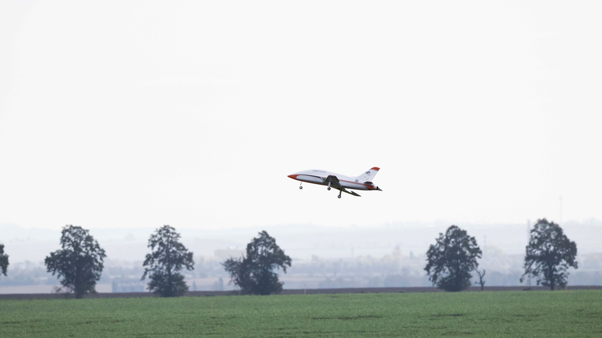

Reduced-order aerodynamic model of the PROTEUS morphing wing
- Problem
- PROTEUS is a jet-powered unmanned research aircraft whose trailing edge is morphed by ten actuators per half-wing. The first aerodynamic model used a vortex-lattice method and a genetic algorithm, which is too costly for real-time flight simulation or reinforcement-learning training.
- What I did
- Owned the aerodynamics block of the team's simulation chain; other team members handled the other blocks and the integration of all of them.
- Developed a multi-fidelity methodology: a low-fidelity model with a gradient-based optimizer finds minimum-drag morphing configurations across the flight envelope, including manoeuvres with a prescribed rolling moment.
- Re-analysed those geometries with a higher-fidelity model of the complete aircraft and condensed them into a lookup-table model, with local actuator effects recovered through superposed increments.
- Compared lookup tables, VLM, lifting-line theory and surrogate models; evaluated AVL, VSPAERO and XFLR5 for the FMU-based simulation environment (PyFDM).
- Result
- Delivered the model and a report on the proposed tool. In the low-fidelity model the optimal configurations reduce drag by 1.5% to 3.2% relative to the undeformed wing. The lookup table reproduces the vortex-lattice reference exactly for the reference geometries and stays within 12% under combined inputs, where superposition neglects cross-coupling. A paper derived from this work, written with L. Kracke (DLR), is not yet published.